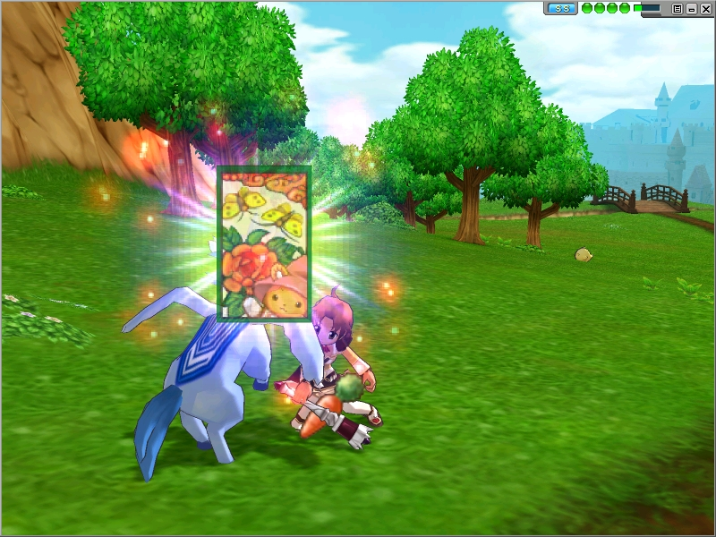

ได้รูปสกิล50 Machinery,Gambler,Marrionestละ ขาด TH =w=
Lovage Cannon
ให้ Pet พาหนะประเภท Robot ยิง Laser ขนาดใหญ่ออกไปเป็นเส้นตรงสามารถใช้ได้เมื่อขับขี่ Pet พาหนะประเภท Robot อยู่


Summon Marionette King
เรียก Marionette King ขนาดใหญ่ออกมา ( แล้วเรียกออกมา มันทำอะไรได้อ๊ะ )
Flower Card
โจมตีต่อเนื่อง 3 ครั้ง หมูป่า กวาง ผีเสื้อ !! ความแรง 350% x 3 ครั้ง = 1050%
Sonic Whip
ฟาดแส้กระชากเป้าหมายเข้ามาใกล้ และรัวเป็นคอมโบ 8 ครั้ง ไม่สามารถใช้ในขณะ Possession ได้ ความแรง 155% x 8 ครั้ง


เนื่องจากว่ามันยังไม่เข้าไทย
ใครที่เล่นอยู่เซิฟเวอร์ JP ใจดีๆ เอามาลงให้ดูหน่อยน๊าๆ จุ๊ฟๆ
แล้วถ้าใจดี บอกสรรพคุณมันหน่อยกะดีนะจ้ะ
ขอบคุณล่วงหน้าจ้า
-edit- แก้ไขให้รูปมานออก + สวยงามนิดหน่อยจ้ะ